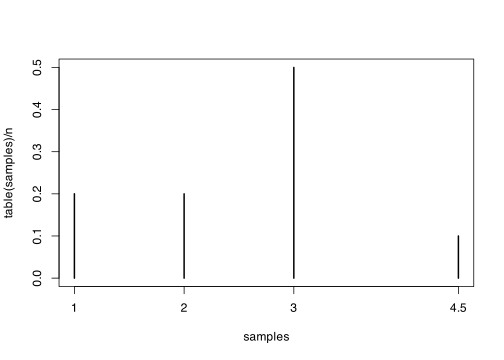
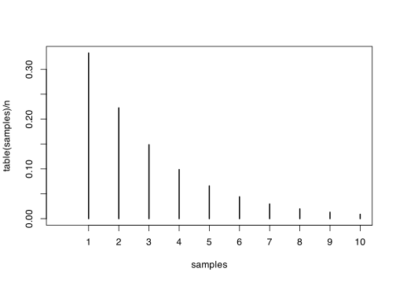
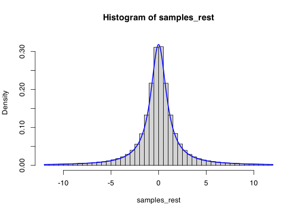

rq1 <- function(n) {
x <- c(1, 2, 3, 4.5)
prob <- c(0.2, 0.2, 0.5, 0.1)
cumprob <- cumsum(prob)
unif <- runif(n)
ifelse(unif <= cumprob[1], x[1],
ifelse(unif <= cumprob[2], x[2],
ifelse(unif <= cumprob[3], x[3], x[4])))
}Problem Sheet 3
This is Problem Sheet 3, which covers material from Lectures 12 to 16. You should work through all the questions on this problem sheet in advance of the problems class, which takes place in the lecture of Thursday 14 November. If you are stuck on any of the questions, you are welcome to discuss them with me in my office hours on Mondays at 1500.
This problem sheet is to help you practice material from the module. It is not for assessment and will not be marked.
Full solutions should be released on Friday 15 November.
\[\newcommand{\Exg}{\operatorname{\mathbb{E}}} \newcommand{\Ex}{\mathbb{E}} \newcommand{\Ind}{\mathbb{I}} \newcommand{\Var}{\operatorname{Var}} \newcommand{\Cov}{\operatorname{Cov}} \newcommand{\Corr}{\operatorname{Corr}} \newcommand{\ee}{\mathrm{e}}\]
1. Consider a discrete random variable that takes values \(1, 2, 3, 4.5\) with probabilities \(0.2, 0.2, 0.5, 0.1\) respectively. Write some R code that will sample from this distribution. (Your code may use the runif() function, but may not use the sample() function.) Check that a large sample from your code really does have the correct distribution.
Solution. There are various ways to do this. With only four outcomes, you can just write a lot of this “by hand”, in a way that wouldn’t be practical if the range were very large, but it pretty easy to write – that’s what I did.
Let’s test its accuracy by drawing a bar plot of a large sample.
n <- 1e6
samples <- rq1(n)
plot(table(samples) / n)
Looks good to me.
2. The geometric distribution \(X \sim \operatorname{Geom}(p)\) represents the number of trials until the first success, where each trial succeeds independently with probability \(p\). The probability mass function of \(X\) is \[ p(x) = (1-p)^{x-1}p \qquad x = 1, 2, \dots. \]
(a) Show that the cumulative distribution function \(F\) of \(X\) is given by \[ F(x) = 1 - (1-p)^x \qquad x = 1, 2, \dots .\]
Solution. I can think of two ways to do this. The first way is to just sum the probabilities, using the formula \[ \sum_{z=0}^{x-1} a^z = \frac{1 - a^x}{1-a} \] for the sum of a geometric progression. We have \[ F(x) = \sum_{y=1}^x (1-p)^{y-1} p = p \sum_{z=0}^{x-1} (1-p)^z = p \frac{1 - (1-p)^{x}}{1 - (1-p)} = 1 - (1-p)^x , \] where in the second equality where shifted the index of the sum with \(z = y-1\).
Alternatively (and, in my opinion, better) is to think about what the geometric distribution means. The geometric probability \(p(x)\) is the probability the first success occurs on the \(x\)th trial. So the complement of the CDF, \(1 - F(x) = \mathbb P(X > x)\) is the probability the first success happens after the \(x\)th trial, which is if and only if the first \(x\) trials are all failures. This is \[ 1 - F(x) = \mathbb P(X > x) = (1-p)^x \] because each of those \(x\) trials fails with probability \(1 - p\). This gives the answer.
(b) Write down a function – either in mathematical notation or in R code – that will transform a standard uniform random variable \(U\) into a geometric distribution. Try to make your function as simple as possible.
Solution. The “dividing lines” between the segments come at the values \(u\) where \(u = 1- (1-p)^x\). Actually, since we’re trying to make the function simple, we could use \(v = 1-u\) (since one minus a standard uniform is still standard uniform), with dividing lines at \(v = (1-p)^x\), which corresponds to \(x = \log v / \log(1-p)\). So the segment corresponding to a uniformly distributed \(v\) will correspond to this value rounded up to the next integer.
So we can take \(U \sim \operatorname{U}[0,1]\), and put \[ X = \left\lceil \frac{\log U}{\log(1-p)} \right\rceil . \]
Let’s check this with R code
rgeom2 <- function(n, p) {
unif <- runif(n)
ceiling(log(unif) / log(1 - p))
}
n <- 1e6
p <- 1/3
samples <- rgeom2(n, p)
plot(table(samples) / n, xlim = c(0, 10))
We could alternatively check the probabilities exactly.
true <- (1 - p)^{1:8 - 1} * p
emp <- table(samples)[1:8] / n
round(rbind(true, emp), 4) 1 2 3 4 5 6 7 8
true 0.3333 0.2222 0.1481 0.0988 0.0658 0.0439 0.0293 0.0195
emp 0.3326 0.2222 0.1488 0.0989 0.0661 0.0435 0.0295 0.0195Looks good again.
3. Consider a Cauchy random variable \(X\) with probability density function \[ f(x) = \frac{1}{\pi(1 + x^2)} .\]
(a) Show that the cumulative distribution function of \(X\) is \[ F(x) = \frac12 + \frac{1}{\pi}\arctan x \]
Solution. The CDF is \[ \begin{multline} F(x) = \int_{-\infty}^x f(y)\,\mathrm{d}y = \frac{1}{\pi} \int_{-\infty}^x \frac{1}{1+y^2}\,\mathrm{d}y = \frac{1}{\pi} \big[\arctan y\big]_{-\infty}^x \\ = \frac{1}{\pi} \bigg( \arctan x - \Big(-\frac{\pi}{2}\Big)\bigg) = \frac{1}{\pi}\arctan x + \frac12, \end{multline}\] since \(\lim_{y\to-\infty} \arctan y = -\frac{\pi}{2}\).
(b) Write down a function that will transform a standard uniform random variable \(U\) into a Cauchy distribution.
Solution. We use the inverse transform method: write \(U = F(X)\) and invert. Here, we have \[ U = \frac12 + \frac{1}{\pi}\arctan X .\] Inverting gives \[X = \tan \bigg(\pi \Big(U - \frac12\Big) \bigg) .\]
This can be interpreted as \(X = \tan\Theta\) where \(\Theta\) is uniform between \(-\frac{\pi}{2}\) and \(\frac{\pi}{2}\).
(c) Using your answer to part (b), draw a histogram of samples from the Cauchy distribution in R.
Solution. My function for generating samples is the following:
rcauchy2 <- function(n) {
unif <- runif(n)
tan(pi * (unif - 1/2))
}The Cauchy distribution is a very heavy-tailed distribution. So to make the histogram look sensible, I’m going to throw away the occasional very large or very small sample. If I didn’t do this, the histogram would probably just look like a single spike at 0. (You of course shouldn’t do this when performing Monte Carlo estimation – those rare very large or very small samples can be extremely important in calculations!)
n <- 1e6
samples <- rcauchy2(n)
samples_rest <- samples[abs(samples) < 12]
hist(samples_rest, probability = TRUE, ylim = c(0, 0.33), breaks = 48)
curve(1 / (pi * (1 + x^2)), add = TRUE, n = 1001, lwd = 2, col = "blue")
4. Let \(F\) be a cumulative distribution function and \(F^{-1}\) its inverse.
(a) Prove that \(F^{-1}\) is a non-decreasing function.
Solution. We recall the definition \(F^{-1}(u) = \min \{x : F(x) \geq u\}\). As \(u\) increases, the set \(A_u = \{x : F(x) \geq u \}\) gets smaller – more specifically, for \(u \leq v\), we have \(A_u \subseteq A_v\). Hence the minimum of the set \(A_u\) cannot be larger than the minimum of the set \(A_v\). Hence \(F^{-1}(u) = \min A_u \leq \min A_v = F^{-1}(v)\), as required.
(b) Show that \(X = F^{-1}(U)\) and \(X' = F^{-1}(1-U)\) have negative (or, rather, non-positive) correlation. You may use any results from the module, provided you state them clearly.
Solutions. The relevant result here is Theorem 7.2. This said that if \(\phi\) is an non-decreasing function, then \(\phi(U)\) and \(\phi(1-U)\) have covariance – and therefore correlation – less than or equal to 0. Here, we use \(F^{-1}\) as the function \(\phi\).
5. Let \(X \sim \operatorname{Beta}(3, 2)\) be a Beta distribution with PDF \[ f(x) = 12 x^2(1-x) \qquad 0 \leq x \leq 1 . \] [Note: An earlier version of this question wrongly had the constant at the front as \(\frac{1}{12}\) instead of \(12\).]
Show how you could sample from \(X\) using envelope rejection sampling and an optimised value of the constant \(c\).
Solution. The obvious suggestion here is to take \(Y\) uniformly distributed on \([0, 1]\), so \(g(x) = 1\) (although you don’t have to choose that).
To find the optimal value of \(c\), we consider the maximum of \(f(x)\). We can find that by differentiating \[ f'(x) = \frac{\mathrm{d}}{\mathrm{d}x} (12x^2 - 12x^3) = (24x - 36x^2) , \] so the maximum is at \(x = \frac23\), where \(f(x) = \frac{16}{9}\). Therefore, we take \(c = \frac{16}{9}\).
Thus, our algorithm is to sample from a standard uniform, and then to accept with probability \[ \alpha(x) = \frac{12x^2(1-x)}{\frac{16}{9}} = \frac{27}{4}\,x^2(1-x) . \]
6. Consider sampling from the half-normal distribution \[ f(x) = \sqrt{\frac{2}{\pi}} \exp\big(-\tfrac12 x^2\big) \qquad x \geq 0 \] using envelope rejection sampling with an \(\operatorname{Exp}(\lambda)\) proposal distribution \[g(x) = \lambda \mathrm{e}^{-\lambda x} \qquad x \geq 0 .\] You wish to design your envelope rejection sampling algorithm so that the acceptance probability is as high as possible.
(a) For fixed \(\lambda\), show that the optimal value of \(c\) is \[c = \sqrt{\frac{2}{\pi}}\,\frac{\exp(\frac12\lambda^2)}{\lambda}.\]
Solution. This is very similar to Example 15.2 in Lecture 15. We have \[ \frac{f(x)}{g(x)} = \frac{\sqrt\frac{2}{\pi} \exp(\tfrac12 x^2)}{\lambda \exp(-\lambda x)} = \sqrt\frac{2}{\pi} \,\frac{\exp \big(-\tfrac12 x^2 + \lambda x\big)}{\lambda} . \] We want to pick \(c\) to be the maximum value of this. The maximum occurs where \(-\frac12x^2 + \lambda x\) is maximised. By differentiating this and setting equal to 0, we get \(-x + \lambda = 0\), so \(x = \lambda\) and \[ c = \sqrt\frac{2}{\pi} \,\frac{\exp \big(-\tfrac12 \lambda^2 + \lambda^2\big)}{\lambda} = \sqrt\frac{2}{\pi} \,\frac{\exp \big(\tfrac12 \lambda^2\big)}{\lambda}, \] as required.
(b) Show that the optimal value of \(\lambda\) is \(\lambda = 1\).
Solution. Again, our goal is to choose \(\lambda\) get \(c\) as small as possible, since \(1/c\) is the acceptance probability. Differentiating the expression from part (a) with respect to \(\lambda\) gives \[ \frac{\mathrm d}{\mathrm d\lambda} \,c = \sqrt\frac{2}{\pi} \frac{\exp \big(\tfrac12 \lambda^2\big)(\lambda^2 - 1)}{\lambda^2}.\] This is 0 when \(\lambda^2 = 1\), and since \(\lambda \geq 0\), the only solution is \(\lambda = 1\). (This can be easily checked to be a minimum by looking at a sketch of \(c\) against \(\lambda\), or differentiating twice, or just by thinking about the behaviour of \(c\) as a function of \(\lambda\).)
7. [2016 exam, Question 1] In this question, we consider generating samples from the distribution with probability density function \[ f_a(x) = \frac{1}{Z} \,\frac{1}{a(\cos x + 1) + x^2} \qquad x \geq 1,\] where \(a\) is a parameter and \[Z = \int_{1}^{\infty} \frac{1}{a(\cos x + 1) + x^2}\,\mathrm{d}x \] is a normalising constant.
(a) Introducing any notation you use, state the inverse transform method for random number generation.
Solution. Fix a cumulative distribution function (CDF) \(F(x) = \mathbb P(X \leq x)\). The inverse CDF is defined to be \(F^{-1}(u) = \max \{x : F(x) \geq u\}\). We then have that \(X = F^{-1}(U)\) has CDF \(F\). We use this typically by writing \(U = F(X)\) and inverting to make \(X\) the subject.
(b) For \(a = 0\), explain how the inverse transform method can be used to generate samples with PDF \(f_0\).
For \(a = 0\), the PDF is \[ f_0(x) = \frac{1}{Z} \,\frac{1}{x^2} \qquad x \geq 1 .\]
We should start by finding the normalising constant \(Z\): it’s \[ Z = \int_1^\infty \frac{1}{x^2}\,\mathrm{d}x = \big[-x^{-1}\big]_1^\infty = 0 -(-1) = 1 , \] so the PDF is simply \(f_0(x) = 1/x^2\).
Next, we want to find the CDF \(F\): it’s \[ F(x) = \int_1^x f_0(y)\,\mathrm{d}y = \int_1^x \frac{1}{y^2}\,\mathrm{d}y = \big[-y^{-1}\big]_1^x = 1 - \frac{1}{x} . \]
Finally, to perform the inverse transform method, we write \(U = F(X)\) and invert. We have \(U = 1 - 1/x\), and so \(X = 1/(1-U)\).
(c) Introducing any notation you use, state the envelope rejection sampling method for random number generation.
(d) For \(a > 0\), explain how the envelope rejection sampling method can be used to generate samples with PDF \(f_a\).
(e) How does the efficiency of your method in part (d) change as the value of \(a\) increases? Justify your answer.